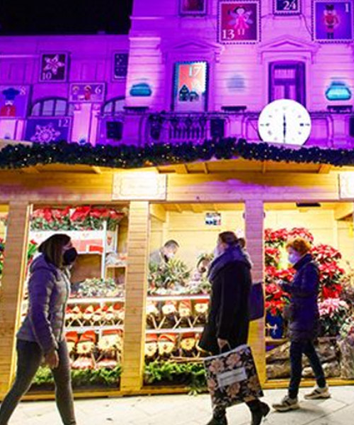
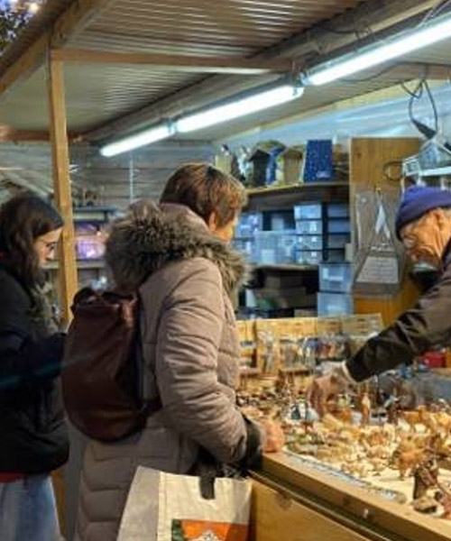
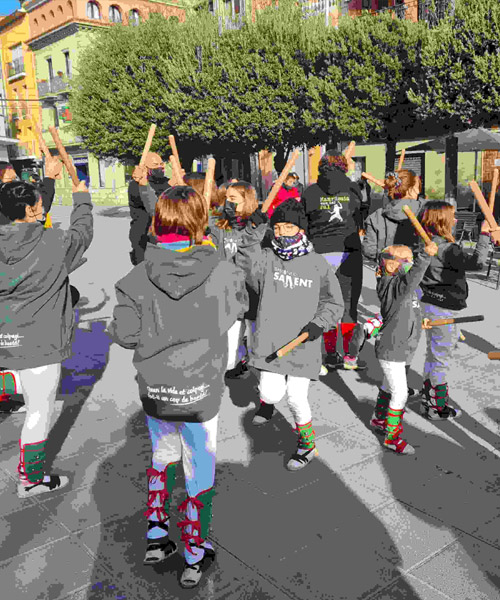
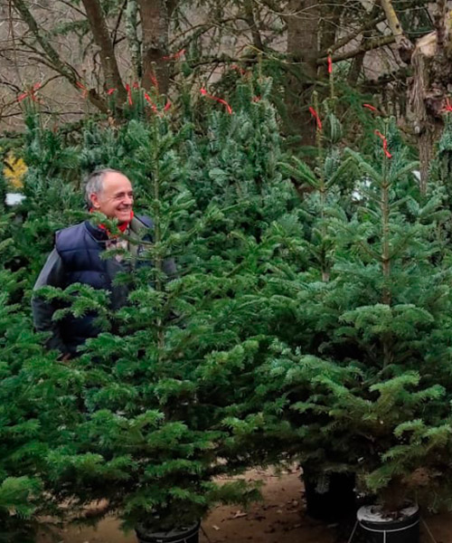
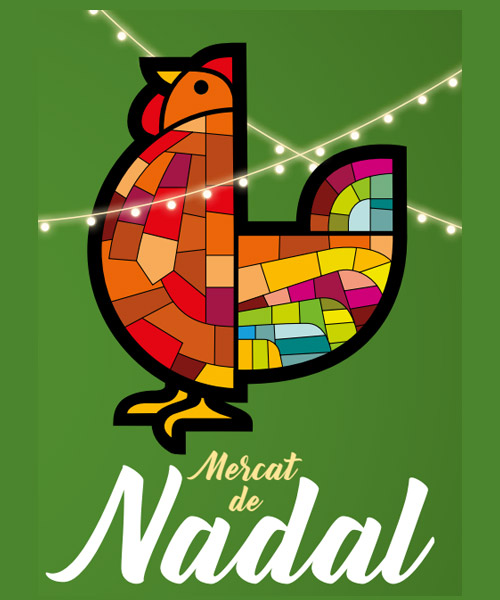
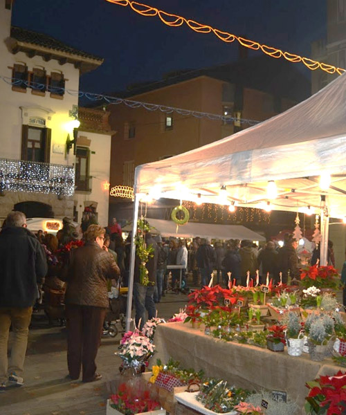
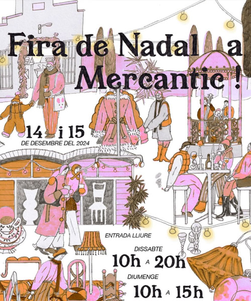
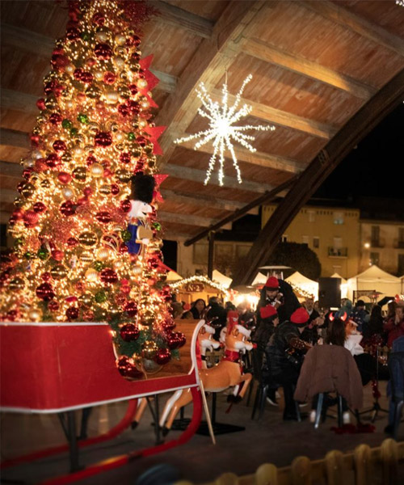
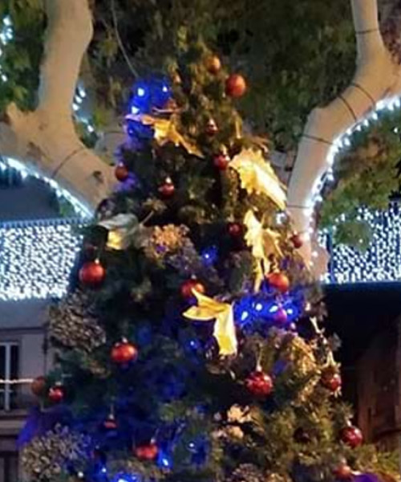

Ferias
Desde puestos de artesanía y decoración hasta abetos y adornos típicos de estas fechas, las ferias y mercados de Navidad son el lugar ideal para encontrar regalos únicos, disfrutar de las delicias navideñas y sumergirse en un entrañable ambiente festivo
Saborear la Navidad

Tradicional feria de Navidad en la que se pueden hallar figuras del Belén y elementos para decorarlos, además de abetos, ramos de la suerte y una amplia variedad de artículos de artesanía. También se ofrecen adornos florales y elementos decorativos para embellecer los hogares durante las fiestas.

La Fira de Santa Llúcia vuelve a la rambla de Nostra Senyora, punto de referencia en Vilafranca del Penedès de la preparación de las fiestas de Navidad. Las paradas ofrecen gran variedad de artículos navideños: figuras para el pesebre, adornos florales y otros elementos decorativos.

Durante unos días el pueblo se transforma en un escenario festivo lleno de magia navideña. En el paseo 1 de Octubre (parque Pere Sallés) se instala un mercado de artesanía con música en directo. Además de las paradas, existen actividades para todas las edades: almuerzo popular, conciertos, bailes tradicionales y gigantes.

La Fira de l’Avet de Espinelves es una de las más singulares. Situada en un pueblo con calles y casas que recuerdan las de un Belén, el ambiente es acogedor. Se pueden comprar árboles de Navidad autóctonos, como las variedades Masjoanis y Picea Excelsa, cultivados en la zona, perfectos para decorar o replantar en casa.

Descubre el ambiente navideño en el mercado de Navidad de Caldes de Montbui, con casitas de madera que ofrecen alimentos y artesanía. Disfruta de la cocina sobre ruedas y actividades infantiles. Aunque el protagonista es el caldo termal, elaborado en la olla más grande de Catalunya con agua de la Font del Lleó.

En Sant Celoni, en Navidad, las calles del centro se llenan con más de 100 puestos de productos navideños. Ofrecen una amplia oferta comercial y un programa de actividades para todas las edades, como talleres de belenes, maquillaje, turrones, animación infantil, paseos en pony y carruajes.

¡Vive la magia de la Navidad en la Fira de Mercantic! Un mercado de artesanía y gastronomía en el que se pueden encontrar regalos únicos. Descubre paradas exclusivas con diseño y artesanía de calidad, disfruta de música en directo y participa en talleres creativos.

Combina tradición y modernidad con antiguos oficios, tecnología y decoraciones navideñas. Imperdonable perderse la zona fresca, donde pueden encontrarse todo tipo de embutidos y productos de la huerta del Llobregat. Un evento imprescindible para el municipio.

El mercado de Navidad vuelve al Cobert de la Màquina de Batre con comercio local, artesanía, gastronomía y música. La plaza 11 de Setembre recreará el encanto de los mercados centroeuropeos con puestos de madera, luces, un gran árbol de Navidad y una pista de hielo para disfrutar en familia.

La Fira de Nadal de Sant Vicenç de Castellet transforma las calles centrales en un espacio lleno de vida y tradición navideña. Con una amplia oferta de paradas que incluyen alimentación, decoración y artesanía. La feria también cuenta con actividades y talleres infantiles para toda la familia.